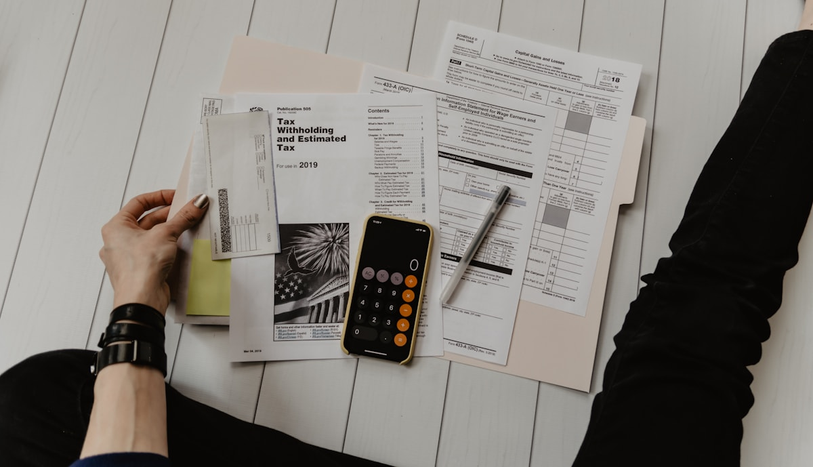

Kedy sa oplatí refinancovať hypotéku?
Refinancovanie hypotéky znamená, že si skontrolujete, či vaša súčasná banka stále ponúka dobré podmienky. Pre klientov z Michaloviec a okolia je to dôležité hlavne pri konci fixácie, vyššom úroku alebo zmene príjmu.

Najčastejšie signály, že sa oplatí kontrola
- končí vám fixácia úroku,
- banka poslala novú vyššiu splátku,
- máte viac úverov a chcete poriadok,
- hodnota nehnuteľnosti sa zmenila,
- chcete znížiť mesačnú záťaž domácnosti.
Nie vždy je najlepšie hneď odísť z banky
Niekedy stačí vyrokovať lepšie podmienky v aktuálnej banke. Inokedy dáva zmysel presun hypotéky. Dôležité je porovnať nielen úrok, ale aj poplatky, znalecký posudok, kataster, poistenie a čas potrebný na zmenu.
Čo si pripraviť?
Pomôže posledný výpis z hypotéky, zostatok úveru, výška splátky, dátum konca fixácie a informácia, či máte k hypotéke aj ďalšie pôžičky. Potom sa dá rýchlo vypočítať, či má refinancovanie reálny zmysel.
Jednoduchá otázka
Ak by ste vedeli ušetriť napríklad 30, 50 alebo 100 eur mesačne, stálo by za to pozrieť sa na zmluvu? Práve na to slúži nezáväzná kontrola.
Chcete skontrolovať svoju splátku?
Zavolajte a pozrieme sa, či sa vaša hypotéka dá nastaviť lepšie.
Zavolať 0951 499 890Článok má informatívny charakter. Presná úspora závisí od individuálnych podmienok.